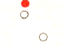
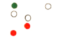
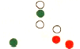
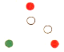
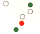
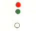
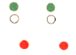
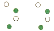

Ветроходен кораб на ход, виждаме кърмата му
Кораб без управление
Риболовен траулер, спуска трала си, виждаме кърмата му

Риболовен траулер, спуска трала си, виждаме кърмата му
Риболовен траулер, по-къс от 50м., обира трала си, движи се на ляво
Риболовен траулер, по-дълъг от 50м., обира трала си, движи се на ляво

Риболовен траулер, по-дълъг от 50м., спуска трала си, движи се на ляво
Риболовен траулер, по-къс от 50м., обира трала си, движи се на ляво
Риболовен траулер, по-дълъг от 50м., обира трала си, движи се на дясно

Риболовен траулер, по-къс от 50м., обира трала си, движи се на ляво
Риболовен кораб, който не е траулер, мрежите му са над 150м.от него, движи се на ляво
Риболовен кораб, който не е траулер, мрежите му са над 150м.от него, движи се на дясно

Риболовен траулер, по-къс от 50м., обира трала си, движи се на ляво
Риболовен кораб, който не е траулер, мрежите му са над 150м.от левия му борд, виждаме кърмата
Риболовен кораб, който не е траулер, мрежите му са над 150м.от него, движи се на дясно

Риболовен траулер, по-дълъг от 50м., обира трала си, движи се на дясно
Риболовен траулер, по-къс от 50м., обира трала си, движи се на ляво
Риболовен траулер, по-дълъг от 50м., спуска трала си, движи се на дясно

Пилотски кораб, вижда се кърмовата му част
Ветроходен кораб, вижда се кърмовата му част
Риболовен кораб, виждаме кърмата

Риболовни кораби по къси от 50м., тралят с близначен трал, движат се на дясно
Риболовни кораби по дълги от 50м., тралят с близначен трал, движат се на ляво
Риболовни кораби по дълги от 50м., тралят с близначен трал, движат се на дясно

Риболовни кораби по-къси от 50м., тралят с близначен трал, движат се на дясно
Риболовни кораби по-дълги от 50м., тралят с близначен трал, движат се на ляво
Риболовни кораби по-дълги от 50м., тралят с близначен трал, движат се на дясно
СВЕТЛИНИ И ЗНАЦИ (ФИГУРИ) - ИЗИСКВАНИЯ ЗА КОРАБ БЕЗ УПРАВЛЕНИЕ И КОРАБ ОГРАНИЧЕН В СПОСОБНОСТА СИ ДА МАНЕВРИРА
Кораб без управление, няма ход относно водата
Риболовен кораб, който не трали
Ветроходен кораб